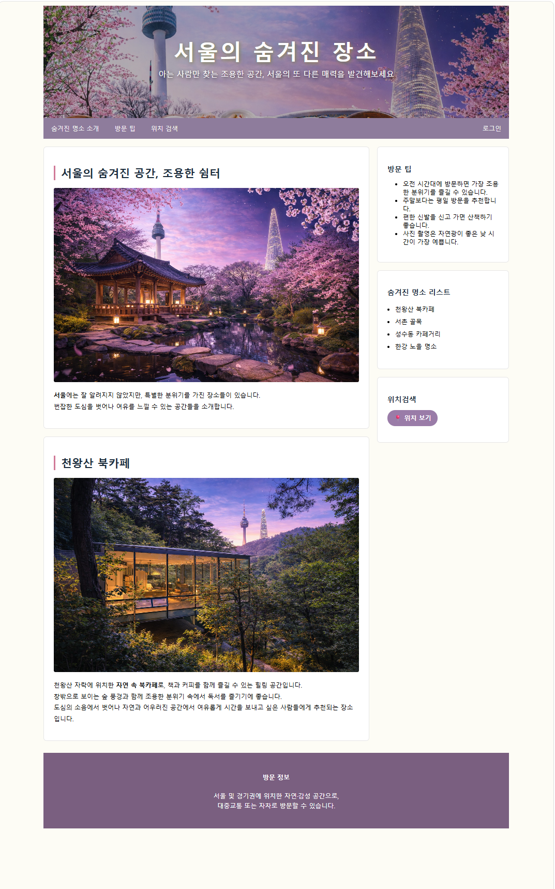
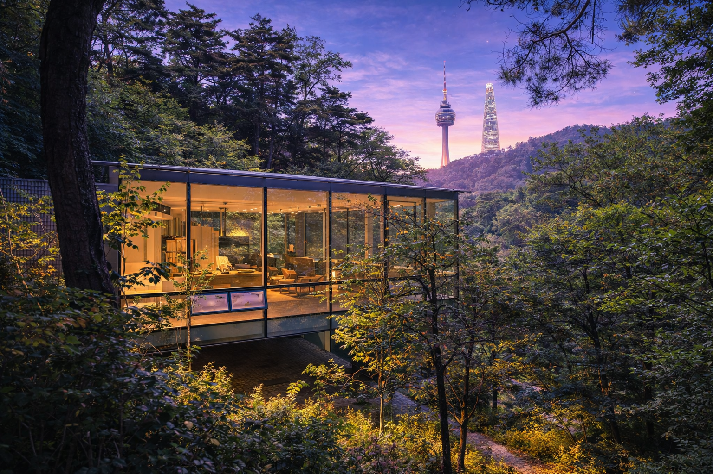

아는 사람만 찾는 조용한 공간, 서울의 또 다른 매력을 발견해보세요

서울에는 잘 알려지지 않았지만,
특별한 분위기를 가진 장소들이 있습니다.
번잡한 도심을 벗어나 여유를 느낄 수 있는 공간들을 소개합니다.

천왕산 자락에 위치한 자연 속 북카페로, 책과 커피를 함께 즐길 수 있는 힐링 공간입니다.
창밖으로 보이는 숲 풍경과 함께 조용한 분위기 속에서 독서를 즐기기에 좋습니다.
도심의 소음에서 벗어나 자연과 어우러진 공간에서
여유롭게 시간을 보내고 싶은 사람들에게 추천되는 장소입니다.